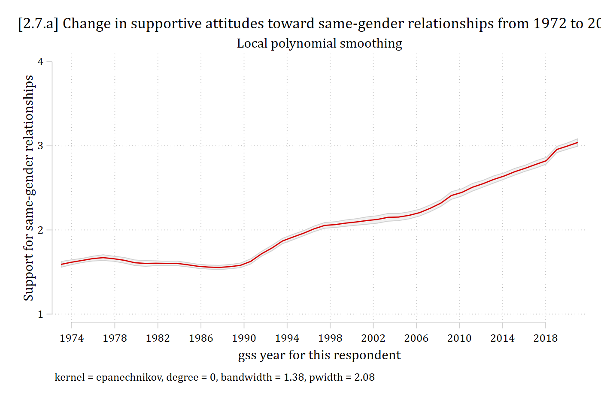
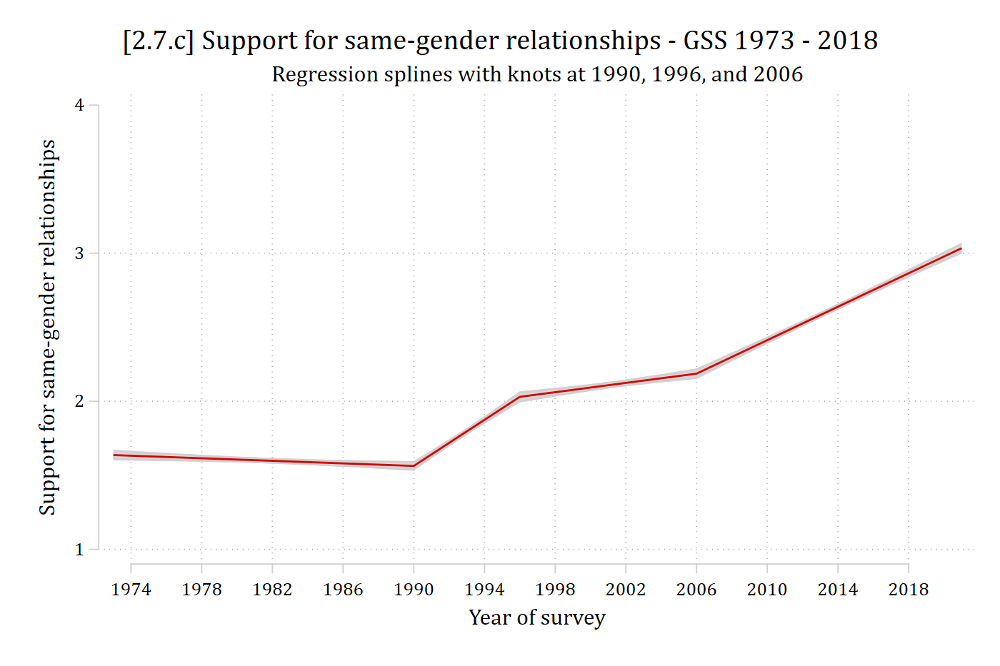

Appendix 2C: Splines
- Sometimes polynomials do not model nonlinearities well enough
- E.g., Too many turns in the line, very quick changes of direction, etc.
- Splines allow you to specify a structural “break” (AKA a “knot”) in the regression line
- Slope can be completely different before and after the knot (e.g., before and after age 60)
- Estimate separate coefficient for age < 60 and age ≥ 60
- Slope can be completely different before and after the knot (e.g., before and after age 60)
- Parametric technique; you get a coefficient (and associated SE/CI/p-value) for the slope between each knot
- Works with almost any regression model
- I give only a quick introduction here. For details on splines, Marsh and Cormier’s 2002 Sage QASS book is a good and accessible introduction to splines
- Also see Edwards and Parry 2018
- See Appendix A2.8 and mkspline for some details on cubic splines which combine splines and nonlinearities

Linear splines
- How do we estimate the two different slopes shown on the graph above?
- Create two variables for x: one summarizes the relationship < 60 and one for the relationship ≥ 60
- Note 60 is the “knot” placement
- Create two variables for x: one summarizes the relationship < 60 and one for the relationship ≥ 60
- First variable summarizes relationship for age < 60. Defined as:
\[{age}_{< 60} = original\ value\ of\ age\ if\ age < 60\]
\[{age}_{< 60} = 60\ if\ age \geq 60\]
- Second variable summarizes relationship for \(age \geq 60\). Defined as age difference from last knot:
\[{age}_{\geq 60} = 0\ if\ age \leq 60\]
\[{age}_{\geq 60} = \#\ of\ years\ since\ last\ knot\ (age\ 60)\]
- For example, age 65 is coded as 5 on \({age}_{\geq 60}\); age 80 is coded as 20 on \({age}_{\geq 60}\)
use "https://tdmize.github.io/data/data/cda_gss", clear(cda_gss.dta | GSS 1972-2021 CDA - Categorical Data Analysis | date created 202
> 3)lpoly samesexop year, ///
xlab(1974(4)2018) ylab(1(1)4) noscatter ci legend(off) ///
ytitle("Support for same-gender relationships") ///
subtitle("Local polynomial smoothing") ///
title("[2.7.a] Change in supportive attitudes toward same-gender relations
hips from 1972 to 2020")
*Where would you place the “knots” to model this with splines?
Interpreting linear splines
- Linear splines specify linear relationships between each “knot”
- I chose knots at 1990, 1996, and 2006 based on graph above
- Here are the variables we need:
mkspline year_lt90 1990 year_90_96 1996 year_96_06 2006 year_06_18 = year
codebook year*, cVariable Obs Unique Mean Min Max Label
--------------------------------------------------------------------------------
year 68846 33 1996.465 1972 2021 gss year for this respondent
year1972 68846 33 24.46544 0 49 Years since 1972
year_lt90 68846 17 1986.615 1972 1990 year: (.,1990)
year_90_96 68846 5 3.443904 0 6 year: (1990,1996)
year_96_06 68846 6 4.058014 0 10 year: (1996,2006)
year_06_18 68846 8 2.348662 0 15 year: (2006,.)
--------------------------------------------------------------------------------reg samesexop year_lt90 year_90_96 year_96_06 year_06_18 Source | SS df MS Number of obs = 40,270
-------------+---------------------------------- F(4, 40265) = 1442.27
Model | 9128.86223 4 2282.21556 Prob > F = 0.0000
Residual | 63714.2247 40,265 1.5823724 R-squared = 0.1253
-------------+---------------------------------- Adj R-squared = 0.1252
Total | 72843.0869 40,269 1.80891224 Root MSE = 1.2579
------------------------------------------------------------------------------
samesexop | Coefficient Std. err. t P>|t| [95% conf. interval]
-------------+----------------------------------------------------------------
year_lt90 | -0.004 0.002 -2.562 0.010 -0.008 -0.001
year_90_96 | 0.078 0.004 17.418 0.000 0.069 0.087
year_96_06 | 0.016 0.003 5.502 0.000 0.010 0.021
year_06_18 | 0.056 0.002 28.645 0.000 0.053 0.060
_cons | 10.155 3.340 3.040 0.002 3.609 16.702
------------------------------------------------------------------------------est store splinemod
est table splinemod, ///
title("[2.7.b] Spline regression model for opinion of same-gender relation
ships") ///
b(%5.3f) star(.05 .01 .001)[2.7.b] Spline regression model for opinion of same-gender relationships
---------------------------
Variable | splinemod
-------------+-------------
year_lt90 | -0.004*
year_90_96 | 0.078***
year_96_06 | 0.016***
year_06_18 | 0.056***
_cons | 10.155**
---------------------------
Legend: * p<.05; ** p<.01; *** p<.001- What do the coefficients mean?*
\[\beta_{year\_lt90} = slope\ if\ year < 1990\]
\[\beta_{year\_90-96} = slope\ if\ year \geq 1990\ \&\ year < 1996\]
\[\beta_{year\_96-06} = slope\ if\ year \geq 1996\ \&\ year < 2006\]
\[\beta_{year\_06-18} = slope\ if\ year > 2006\]
*We will learn how to test the equality of these coefficients in the 05 Testing section
margins, over(year)Predictive margins Number of obs = 40,270
Model VCE: OLS
Expression: Linear prediction, predict()
Over: year
------------------------------------------------------------------------------
| Delta-method
| Margin std. err. t P>|t| [95% conf. interval]
-------------+----------------------------------------------------------------
year |
1973 | 1.637 0.018 90.842 0.000 1.602 1.672
1974 | 1.633 0.017 98.251 0.000 1.600 1.665
1976 | 1.624 0.014 116.005 0.000 1.597 1.651
1977 | 1.620 0.013 126.310 0.000 1.595 1.645
1980 | 1.607 0.010 157.664 0.000 1.587 1.627
1982 | 1.598 0.010 166.737 0.000 1.579 1.617
1984 | 1.589 0.010 156.927 0.000 1.570 1.609
1985 | 1.585 0.011 146.878 0.000 1.564 1.606
1987 | 1.577 0.013 124.141 0.000 1.552 1.601
1988 | 1.572 0.014 113.406 0.000 1.545 1.599
1989 | 1.568 0.015 103.655 0.000 1.538 1.598
1990 | 1.564 0.016 94.967 0.000 1.531 1.596
1991 | 1.641 0.014 120.695 0.000 1.615 1.668
1993 | 1.797 0.011 156.273 0.000 1.774 1.819
1994 | 1.875 0.013 145.662 0.000 1.849 1.900
1996 | 2.030 0.019 108.201 0.000 1.993 2.067
1998 | 2.061 0.015 140.407 0.000 2.033 2.090
2000 | 2.093 0.012 174.484 0.000 2.069 2.116
2002 | 2.124 0.012 181.526 0.000 2.101 2.147
2004 | 2.155 0.014 154.449 0.000 2.128 2.183
2006 | 2.187 0.018 122.749 0.000 2.152 2.222
2008 | 2.300 0.015 155.128 0.000 2.271 2.329
2010 | 2.413 0.012 194.880 0.000 2.388 2.437
2012 | 2.526 0.011 232.629 0.000 2.504 2.547
2014 | 2.638 0.011 247.589 0.000 2.618 2.659
2016 | 2.751 0.012 232.236 0.000 2.728 2.775
2018 | 2.864 0.014 203.429 0.000 2.837 2.892
2021 | 3.034 0.019 163.711 0.000 2.997 3.070
------------------------------------------------------------------------------marginsplot, recastci(rarea) ciopts(col(gs13)) plotopts(msymbol(none)) ///
xlab(1974(4)2018) ylab(1(1)4) ///
ytitle("Support for same-gender relationships") xtitle("Year of survey") /
//
title("[2.7.c] Support for same-gender relationships - GSS 1973 - 2018", s
ize(medlarge)) ///
subtitle("Regression splines with knots at 1990, 1996, and 2006")Variables that uniquely identify margins: year